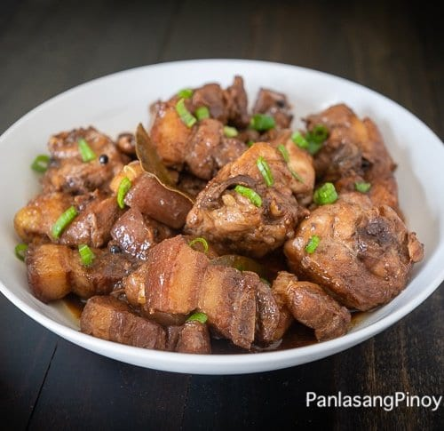

Pork Adobo

Another Filipino dish made by marinating the pork in soy sauce and crushed garlic. Sometimes,
vinegar is also added to the marinade. Almost all meat, seafood, and vegatables can be cooked using this method.
Ingredients
- 1 1/2 lb chopped pork belly
- 1 1/2 lb chicken cut into serving pieces
- 4 pc dried bay leaves
- 2 tsp whole peppercorn
- 1 head slightly crushed garlic
- 6 tbsp white vinegar
- 1/2 cup soy sauce
- 1 tbsp oyster sauce
- 2 tsp brown sugar
- 2 cups water
- Salt to taste
- 3 tbsp cooking oil
Directions
- Heat oil in a pan.
- Once the oil becomes hot, add the garlic. Cook until the color turns golden brown.
- Remove the garlic and set aside. Add pork and chicken. Cook for 5 minutes or until the color turns light brown.
- Add whole peppercorn, bay leaves, oyster sauce, soy sauce, and water. Let boil and simmer until the meat gets tender.
- Add the sugar and stir.
- Pour-in vinegar and let boil. Simmer until most of the liquid evaporates.
- Add salt to taste. Put-in the fried garlic, stir, and cook for 2 minutes.
- Serve. Share and enjoy!
Go back